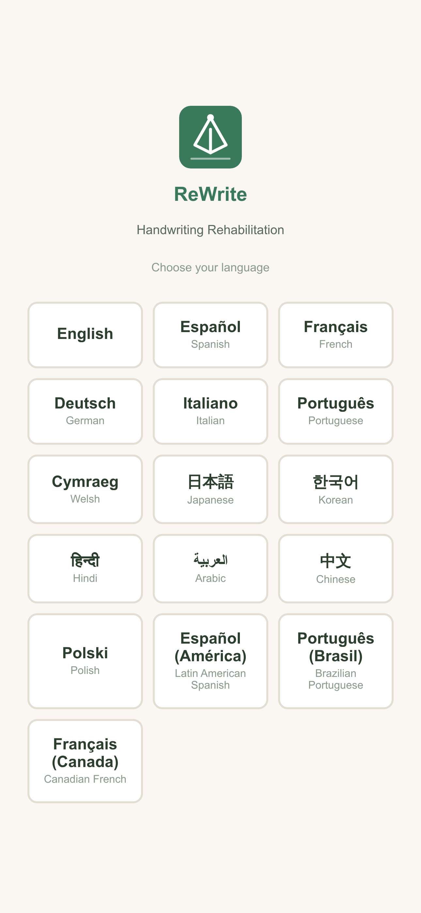
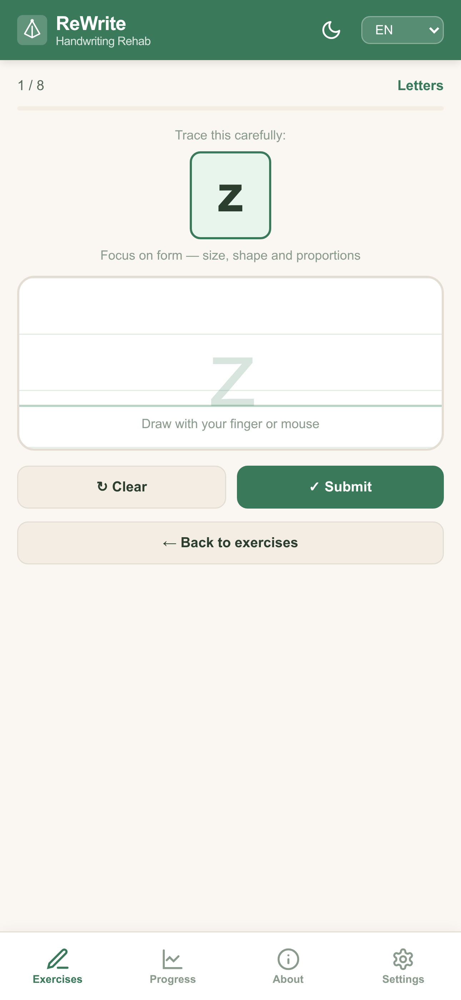
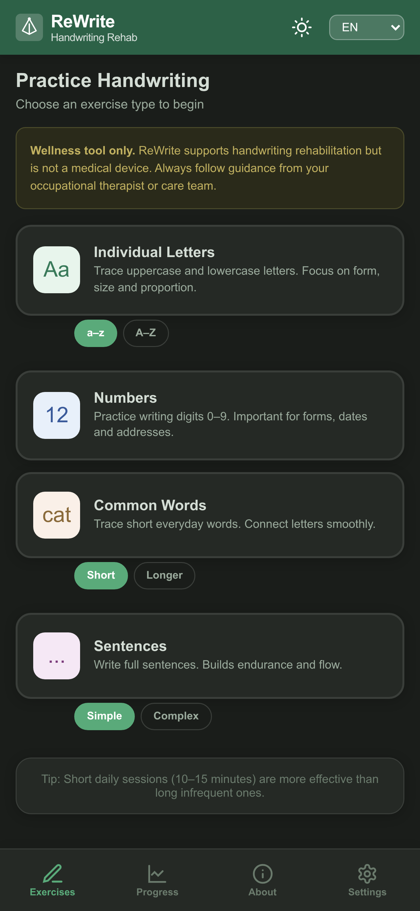

ReWrite
Handwriting Rehab
Guided handwriting rehabilitation
ReWrite helps people recovering from stroke or other neurological conditions practise handwriting through guided tracing exercises. Start with individual letters, progress to words and full sentences — building confidence and motor control at your own pace.



How it works
- Letter tracing — Trace individual letters with on-screen guides that show stroke order and direction
- Word practice — Move on to common words with guided tracing and real-time feedback
- Sentence writing — Build towards full sentences at your own pace
- Progress tracking — See your improvement over time with accuracy scores and session history
Research basis
ReWrite's approach is grounded in established principles of motor rehabilitation and stroke recovery. Repetitive task-specific practice — the foundation of handwriting rehabilitation — has strong evidence across the neurological literature.
- Langhorne, P., Bernhardt, J. & Kwakkel, G. (2011). "Stroke rehabilitation." The Lancet, 377(9778), 1693–1702. Establishes the evidence base for repetitive, task-specific training in stroke recovery.
- Yancosek, K.E. & Howell, D. (2009). "A narrative review of dexterity assessments." Journal of Hand Therapy, 22(3), 258–270. Reviews motor assessment and training approaches for fine motor rehabilitation.
- Veerbeek, J.M. et al. (2014). "What is the evidence for physical therapy poststroke? A systematic review." PLoS ONE, 9(2). Comprehensive evidence review supporting repetitive practice for motor recovery.
These studies inform the training approach — ReWrite is not itself a clinically validated tool. It is a wellness support tool designed to complement professional rehabilitation.
Who ReWrite is for
- Stroke survivors relearning handwriting — whether you're rebuilding fine motor control or regaining confidence with a pen
- Occupational therapists — a structured home practice tool to recommend between clinical sessions, with progress tracking you can review together
- People with neurological conditions — including brain injury, Parkinson's, and other conditions affecting handwriting
- Carers and family — a supportive, guided way to practise that doesn't require you to know the clinical techniques yourself
What to expect
Handwriting recovery takes time and consistent practice. Most rehabilitation programmes recommend daily practice of 10–15 minutes. ReWrite is designed for exactly this kind of steady repetition.
Start with individual letters, where guides show you the correct stroke order and direction. As your control improves, move to words and sentences. The scoring is deliberately forgiving — it rewards effort and consistency over perfection.
ReWrite is a wellness support tool — not a medical device. It does not diagnose, treat, or cure any condition. Always follow the guidance of your occupational therapist or rehabilitation team.
Why ReWrite, not a children's tracing app?
Children's handwriting apps like iTrace teach letter formation to children learning to write for the first time. ReWrite is built for adults relearning a skill they once had. The difference matters.
ReWrite uses adult vocabulary and sentence content, supports 16 languages including Chinese and Japanese character tracing with correct stroke order, has a forgiving scoring system designed for neurological recovery rather than school assessment, and includes progress tracking that you can share with your therapist.
Key features
- 16 languages — English, Spanish, French, German, Italian, Portuguese, Welsh, Japanese, Korean, Hindi, Arabic, Chinese, Polish, Latin American Spanish, Brazilian Portuguese, and Canadian French
- CJK character support — Full support for Japanese and Chinese character tracing with correct stroke order
- Adjustable difficulty — Control guide visibility, letter size, and complexity to match your current ability
- Forgiving scoring — Designed to encourage practice, not penalise imperfection
- Works fully offline — No internet connection needed after download
- No data collected — All progress stays on your device
Frequently asked questions
Is ReWrite a medical device?
No. ReWrite is a wellness support tool designed to complement professional rehabilitation. It does not diagnose, treat, or cure any condition. Always use it alongside guidance from your occupational therapist or care team.
What languages does it support for character tracing?
All 16 languages, including full Chinese and Japanese character support with correct stroke order. Arabic is supported with right-to-left layout. Each language has its own word and sentence content — not just translated interfaces.
Can I share my progress with my therapist?
Yes — ReWrite has an email progress report feature that generates a summary you send via your device's own mail app. No data is stored or processed by us.
Is there a subscription?
No. £29.99 one-time purchase. No subscription, no in-app purchases, no ads.
Does it work offline?
Yes. After the initial download, everything works without an internet connection.
Can I use it on a tablet?
Yes. ReWrite works on phones and tablets. A larger screen can make tracing easier and is worth trying if you have access to one.
Pricing
One-time purchase on the App Store, Google Play, and Amazon
Try the letter tracing exercise free — no account needed